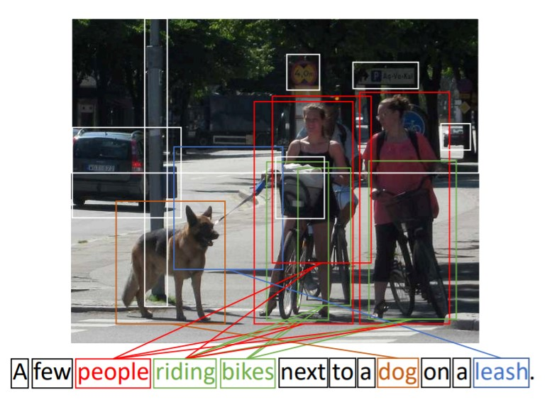
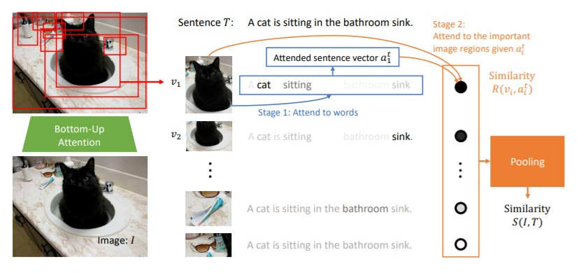
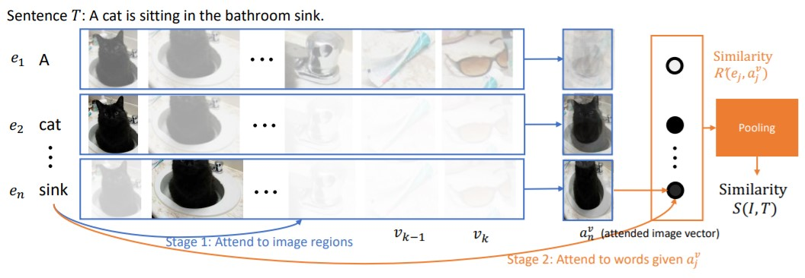

Stacked Cross Attention for Image-Text Matching
Analysis, further thinking and relation with my current work
Hint: 本文主要是对该论文进行分析，除了对论文内容进行叙述，还穿插着本人自己的思考，所以该文中的一些论述不一定在原论文有对应的表达。
Abstract
之前的工作：
- 简单地将所有可能的图像区域–单词对的相似度进行融合，而没有对重要或不重要的词语和区域施加不同的注意力。
- 使用多阶段的注意力机制对图像特征空间和文本特征空间进行有限次的语义对齐 (alignment), 可解释性相对较差。
在本文中，作者提出了Stacked Cross Attention，充分利用图像区域与文本中的词语以探索隐空间 (特征空间) 的对齐，并计算图像-文本相似度。
Intro
作者注意到，文本中的内容会频繁地涉及图像中的主要/显著物体，并和这些物体的特征和动作相关联。(通常还是隐式的表达，例如在下图中，A few 隐式地参考了图像中的两个人，next to 则参考了人和左边的狗)。
因此，图像匹配的文本其实是该图像的弱标注 (weak annotation)。即文本中的词实际对应着图像中的特殊但未知的一些区域。因此找到隐藏的对应关系对于图文匹配任务非常重要。
YTEP: 既然在浅层语义层面 (即原图像和文本数据)，图像各区域与文本各词之间的关联是隐式且复杂的，则设法将图像和文本进行良好的高维投影 (通过正确的学习方式)，以促使在隐空间中，图像特征 $v$ 和文本特征 $t$ 的各维度均为可比较的 (comparable)。由此，便可以通过度量 $v$ 和 $t$ 的距离以表示原图像数据和文本数据的相似程度。In a word，就是让低层语义数据映射到特征空间后，原本的复杂跨域对应关系变为特征向量间的简单可比关系。
SCAN
首先使用bottom-up attention去检测，并将图像各区域进行特征编码（转化为特征向量）， 同时，将文本中的各文字转化为特征向量。之后用stacked cross attention将文本特征和图像特征进行对齐，并计算图像-文本相似度。
图像区域的特征向量集合 $V = {v_1,…,v_k},v_i\in\mathbb{R}^D$，每个向量表示图像中的一个区域。
各单词的特征向量集合 $E = {e_1,…,e_n}, e_i\in\mathbb{R}^D$， 各向量表示文本描述中的一个单词。
Image-text formulation:
给定图片和文本描述，首先用每个图像区域对文本的各个词施加不同的注意力，将施加注意力后的文本转化为新的向量 $t_{new}$，再用该区域与 $t_{new}$ 做比较以确定该图像区域对于文本的重要性。(eg: 是否在$t_{new}$) 中有所提及。
给定图像 $I$ 含有 $k$ 个区域，文本 $T$ 含有 $n$ 个词语，首先我们计算所有 $(v_i,e_j)$ 数据对的相似性矩阵 $S$：
$$
s_{ij} = \frac{v_i^Te_j}{||v_i||\cdot||e_j||},\ i\in[1,k],\ j\in[1,n]
$$
将相似度阈值设为0，并将矩阵标准化：
$$
\overline{s}{ij} = \frac{[s{ij}]{+}}{\sqrt{\sum{i=1}^k[s_{ij}]{+}^2}}
$$
用图像区域对各个词语施加注意力后，整个文本的加权表达为：
$$
a_i^t=\sum_{j=1}^n\alpha{ij}e_j
$$
其中
$$
\alpha_{ij} = \frac{exp(\lambda_1 \overline{s_{ij}})}{\sum_{j=1}^nexp(\lambda_1 \overline{s_{ij}})}
$$
$\alpha_{ij}$ 表示 $v_i$ 对 $e_j$ 的相似度占 $v_i$ 对所有词语的相似度之和的比例。
$v_i$ 对于文本 $a_i^t$ 的重要性则可以表示为：
$$
R(v_i,a_i^t) = \frac{v_i^Ta_i^t}{||v_i||\cdot||a_i^t||}
$$
图像 $I$ 与文本 $T$ 的相似度可如下计算：
$$
S_{AVG} (I,T) = \frac{\sum_{i=1}^tR(e_j,a_j^v)}{n}
$$
值得注意的是，如果区域 $i$ 在文本中没有提及，则 $v_i$ 和 $a^t_i$ 的相似度会很低，因为 $\forall j\in[1,n] \ s_{ij} \to 0$，即 $v_i$ 无法从文本中提取出有效的信息。反之，如果区域 $i$ 在文本中有提及，则 $v_i$ 和 $a^t_i$ 的相似度较高。由此，便在训练过程中实现了图像和文本的语义空间的对齐。
Text-Image formulation:
首先用文本中的各词对每个图像区域施加注意力，将施加注意力后的各区域融合得到向量 $v_{new}$, 再用该单词与 $v_{new}$ 做比较，确定该词对于该图像的重要性。
计算图像 $I$ 和 文本 $T$ 的相似性矩阵 $S’$ ，其中区域 $i$ 和词语 $j$ 之间的相似度为：
$$
\overline {s}{ij}’ = \frac{[s{ij}]+}{\sum{j=1}^n[s_{ij}]^2_+}
$$
用词 $e_j$ 对各个图像区域施加注意力后，整个图像可通过各个区域进行加权融合表示：
$$
a_j^v = \sum_{i=1}^k \alpha_{ij}\cdot v_i
$$
其中 $\alpha_{ij}$ 表示词 $j$ 对区域 $i$ 的注意力：
$$
\alpha_{ij} = \frac{exp(\lambda_1\overline{s}’{ij})}{\sum{i=1}^kexp(\lambda_1 \overline{s}’_{ij})}
$$
词 $e_j$ 对图像向量 $a_j^v$ 的重要性为：
$$
R(e_j,a_j^v) = \frac{e_j^Ta_j^v}{||e_j||\cdot||a_j^v||}
$$
则图像 $I$ 和 文本 $T$ 之间的相似度可表示为：
$$
S’{AVG} (I,T) = \frac{\sum{j=1}^nR(e_j,a_j^v)}{n}
$$
YTEP: 其实可以考虑将各区域对文本的相似度进行合理加权。 但主要问题是各区域并非图像中独立的部分，而有众多重叠的部分。
那么在之前的工作中，用点积计算区域与单词的相似度，$s_{ij} =v_i^Te_j$ 。对于每个词语，找到其对应的最大相似度，最终将所有词语的最大相似度相加得到文本-图像的相似度。
$$
S’{SM}(I,T) = \sum{j=1}^n\max_i(s_{ij})
$$
本文对该公式进行了延拓，同时考虑将所有区域的最大相似度求和。
$$
S_{SM}(I,T) = \sum_{i=1}^t\max_j(s_{ij})
$$
YTEP: 之前的方法是直接用局部相似度进行计算，但是没有对跨模态的局部向量 (区域/单词) 进行对齐操作。模型并没有充分利用数据中的语义。
Alignment Objective
使用 Triplet loss:
$$
l(I,T) = \overbrace{\sum_{\hat{T}}[\alpha-S(I,T)+S(I,\hat{T})]{+}}^{image \ anchor}+\underbrace{\sum{\hat I}[\alpha-S(I,T)+S(\hat I,T)]+}{text\ anchor}
$$
对应每一个image, text anchor，将其和所有负样本对所对应的损失相加。如果 $(I,T)$ 在共同映射空间中的相似度大于其他所有还有 $I$ 或 $T$ 的负样本对，则 $S(I,T)$ 的值很大，导致损失函数为0。 而如果 $(I,T)$ 在映射空间中的相似度较小，则 $S(I,T)$ 值很小，$S(I,\hat{T})$ 和 $S(\hat I,T)$ 相对较大，则损失函数很大，模型会对映射方式进一步优化。为了减少计算量，通常用难样本对代替所有负样本对进行计算。对于正样本对 $(I,T)$，
$$
\hat{I}h = argmax{m\neq I}S(m,T) \
\hat{T}h=argmax{d\neq T}S(I,d) \
l_{hard}=[\alpha-S(I,T)+S(I,\hat{T}h)]{+}+[\alpha-S(I,T)+S(\hat{I_h},T)]_+
$$
YTEP：经过上述对SCAN网络的分析可发现，本文中所提及的Alignment其实是在计算图像和文本的相似度时，隐式地运用了跨模态的Attention机制进行对齐。而并没有显式地 (例如通过区域与词之间的相似度直接改变两者的特征图)。